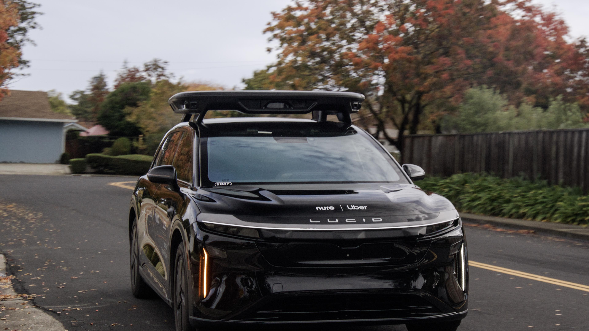

Компании Nuro, Lucid Motors и Uber 24 ноября объявили, что их роботакси начали полностью автономные испытания на обычных дорогах в Сан-Франциско. Главный шаг — из-за руля убрали водителей-операторов безопасности: до этого месяцами шли тесты с человеком, готовым перехватить управление. В официальном анонсе Nuro этот момент назван «критическим следующим шагом на пути к публичному запуску».
Беспилотные тесты стартовали сразу в четырёх городах южной части залива — Пало-Альто, Маунтин-Вью, Лос-Альтос и Саннивейл; в 2027 году география расширится на весь регион. По данным The Verge, на дорогах теперь больше 100 модернизированных SUV Lucid Gravity — раньше парк инженерных машин насчитывал 75. Автомобиль построен на вычислительной платформе NVIDIA DRIVE AGX Thor, вооружён 360-градусным массивом камер, лидаров и радаров, а на крыше — модуль Halo со светодиодным дисплеем: он показывает инициалы пассажира, чтобы тот не перепутал машину.
Скоро к тестам добавятся поездки для сотрудников компаний, а обычные пользователи увидят роботакси в приложении Uber в первом квартале 2027 года — это небольшая задержка относительно первоначального плана (конец 2026-го). Во второй половине 2027-го сервис должен прийти в Хьюстон. Сама платформа Gravity — электрический SUV с запасом хода до примерно 450 миль и быстрой зарядкой, чтобы машина меньше простаивала.
Связка «автопроизводитель + разработчик автономии + платформа заказов» давно выглядит главной бизнес-моделью роботакси: Lucid делает машину, Nuro — автопилот, Uber привозит пассажиров и уже набил руку на партнёрстве с Waymo в Остине и Атланте. Для Nuro это вообще разворот к новому бизнесу: компания отказалась от доставки грузовых роботов ради программы роботакси. Теперь всё решат первые публичные поездки — насколько редкими окажутся ситуации, в которых машину придётся «подбирать» дистанционной поддержке.